تصوّر مقترح · مبني على واقعك (114 مشروع · care.experience كعقد · project.task)
كل مشروع بإدارته وعقده + عمال/سيارات/تاسكات/متأخرات
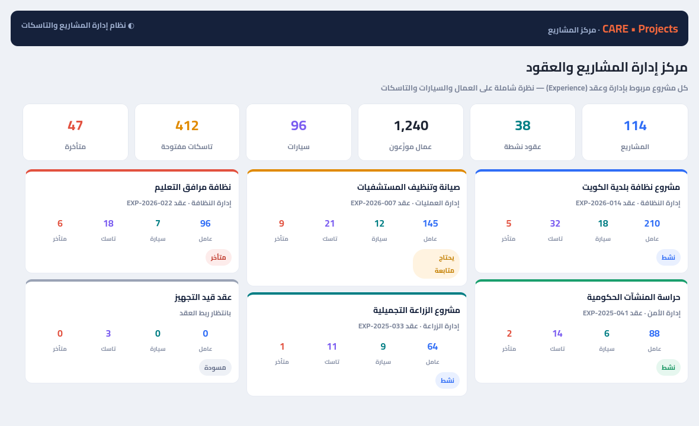
العقد المرتبط + السيارات + العمال + التاسكات
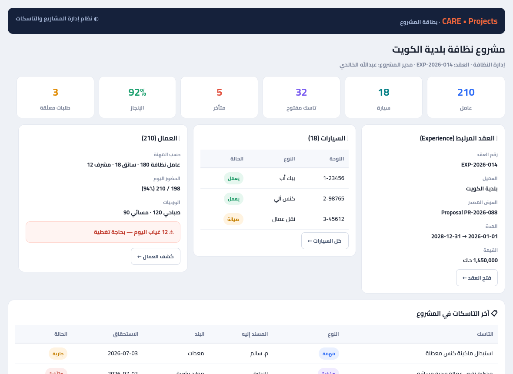
أنواع متعددة + مسند + بند + أولوية
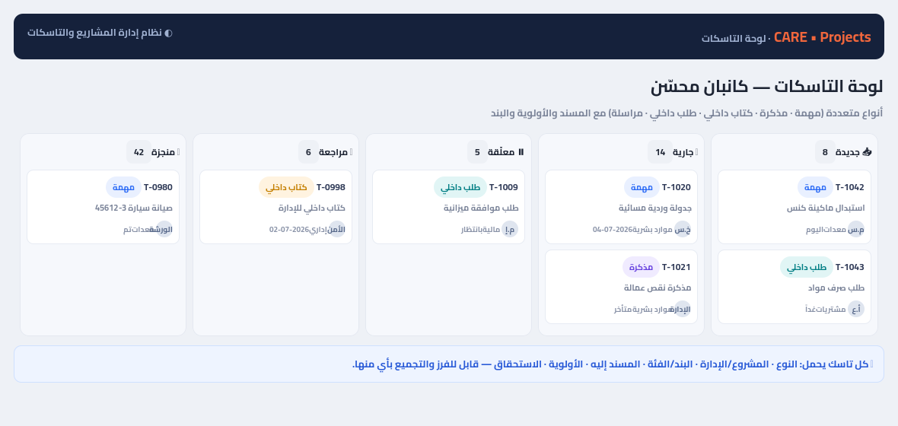
Forward بإشعار وقبول/رفض وتتبّع كامل
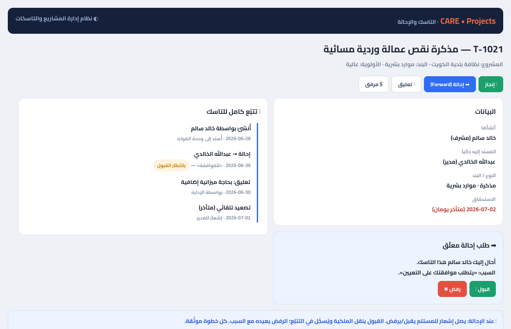
يراها الأعضاء فقط — ينشئها المدير
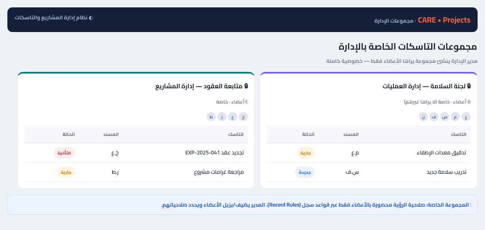
تفصيل حسب الفئة/الإدارة/المسؤول
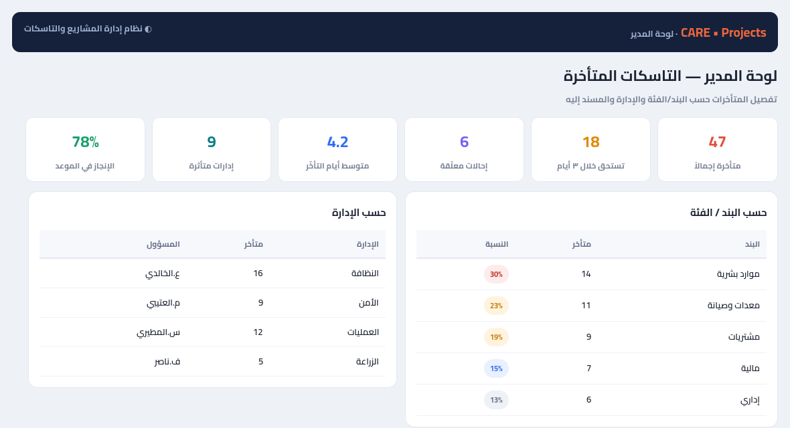
أنواع بسير اعتماد
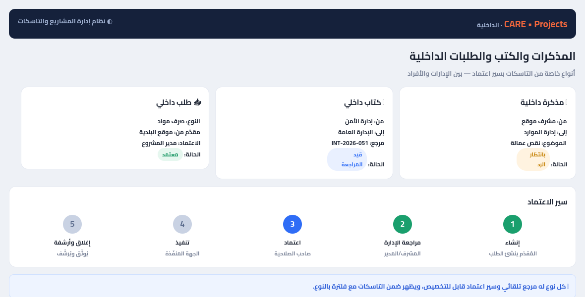
صلاحية محددة على مشروع محدد
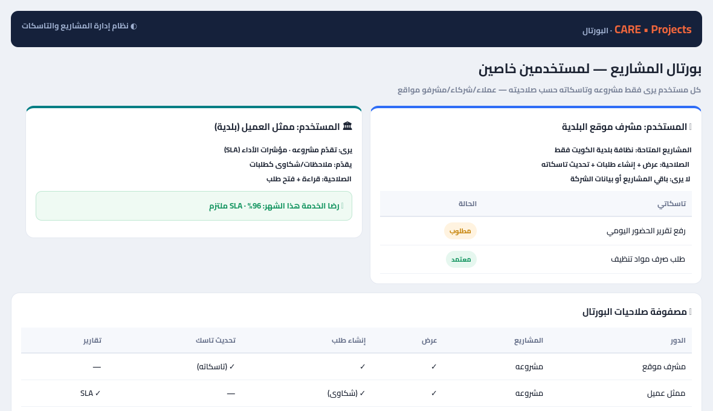
حضور · مهارات · سيارات · مشتريات · مواد · مالية · إقامات
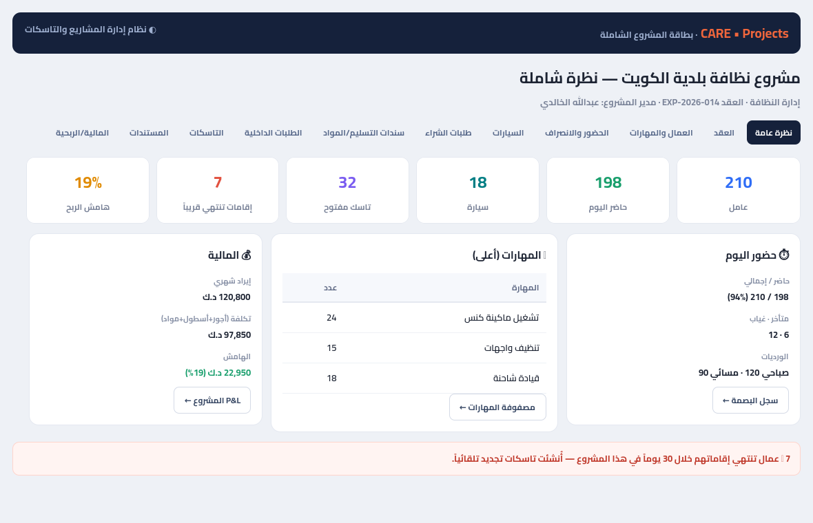
طلبات شراء + سندات تسليم + استهلاك مقابل ميزانية
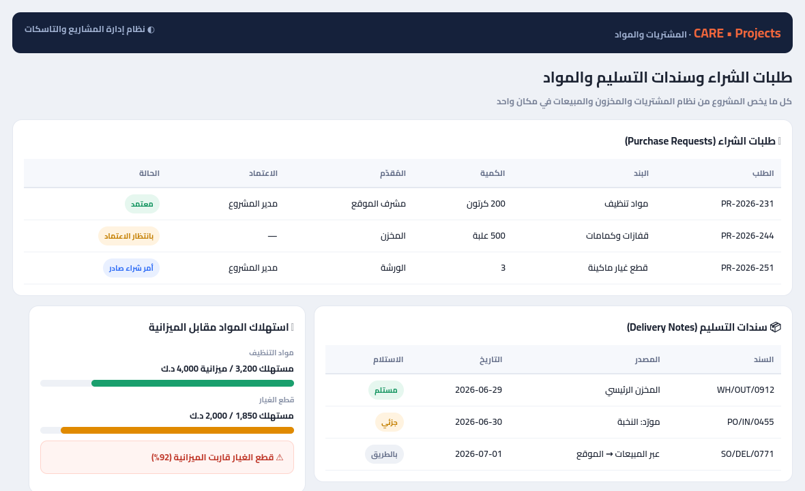
مباشر من البصمة + مهارات عمال المشروع
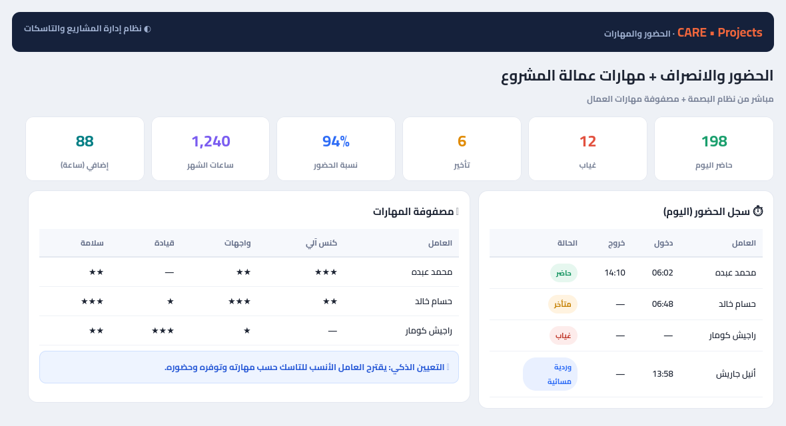
إعدادات لكل شيء + مصفوفة رؤية قابلة للضبط
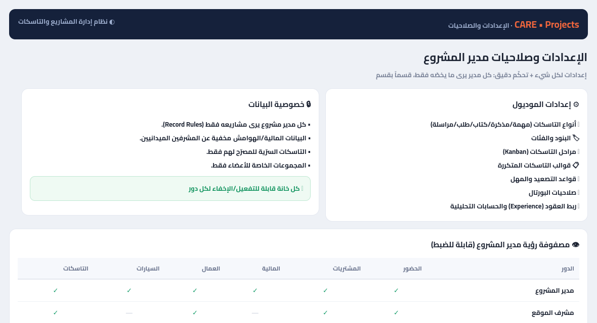
تنبيه مبكر يمنع الغرامات + ربط ملف الحصة
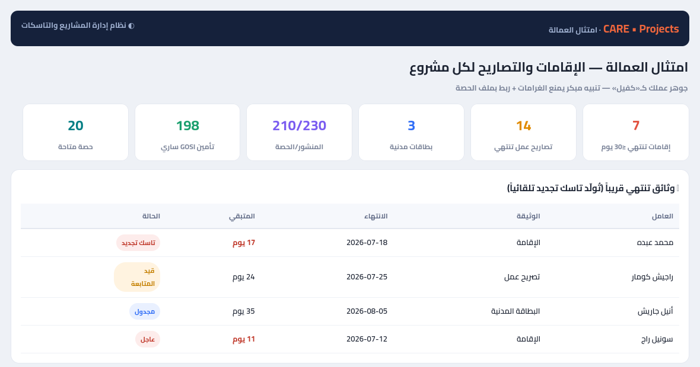
مستلَم − مسحوب = المتاح · تنبيه إعادة الطلب
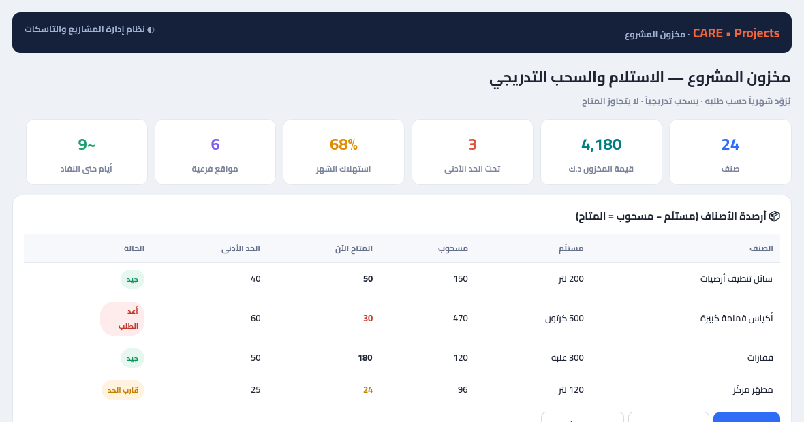
يمنع تجاوز المتاح فعلياً
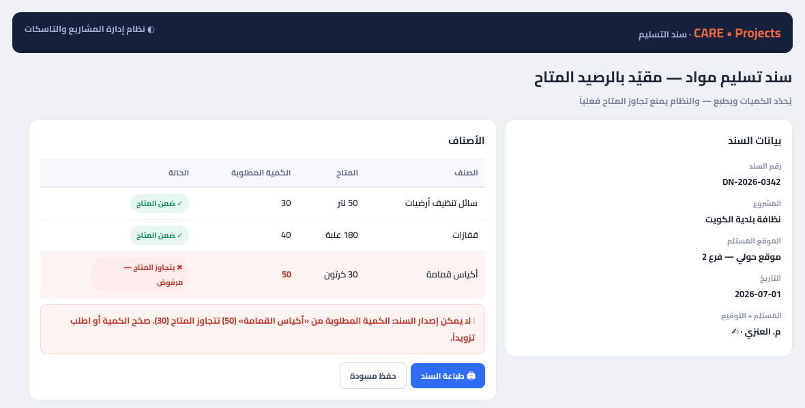
تُقيّد في نظام الأصول (المالية) + عُهدة
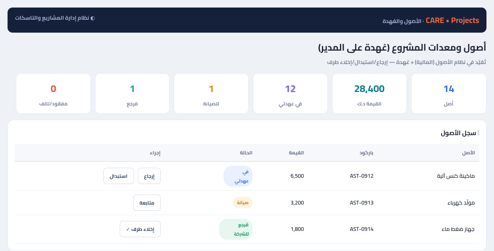
توثيق بالصور · متبقّي · إغلاق · كفر للمالية
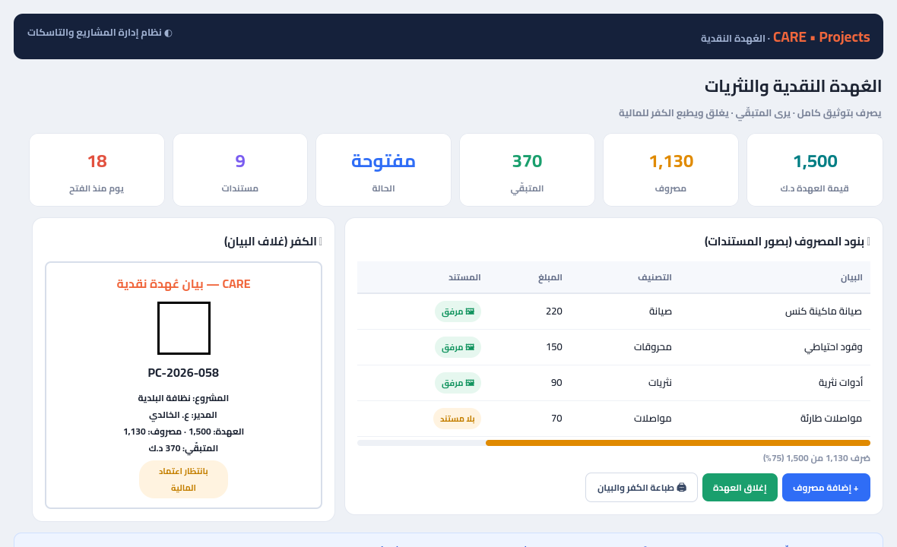
استهلاك/كفاءة لكل سيارة + تنبيه
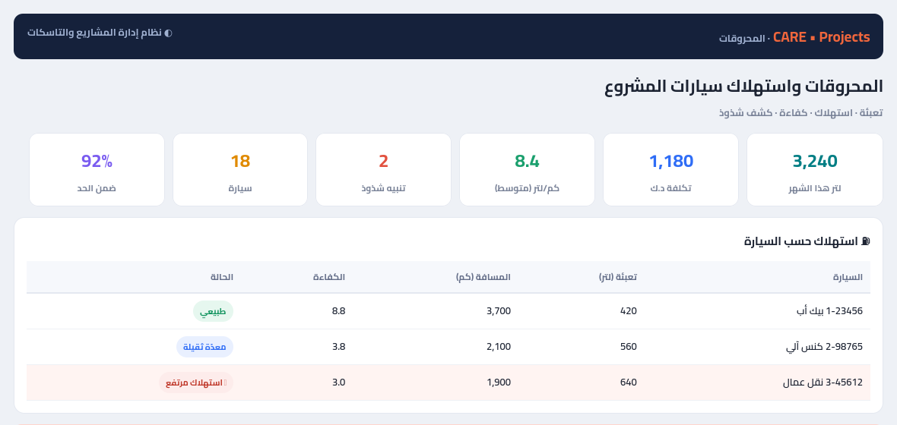